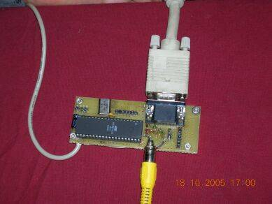
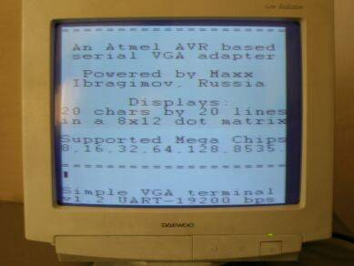
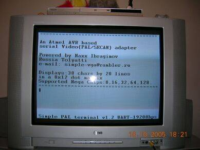
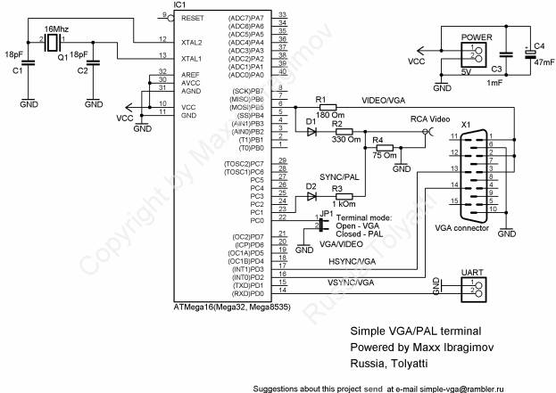
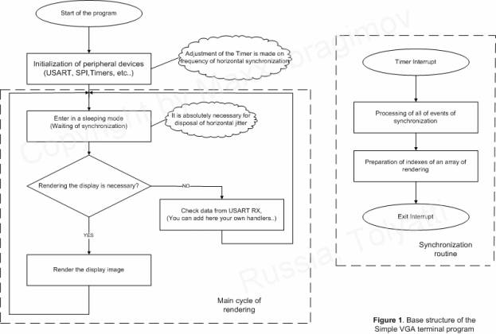
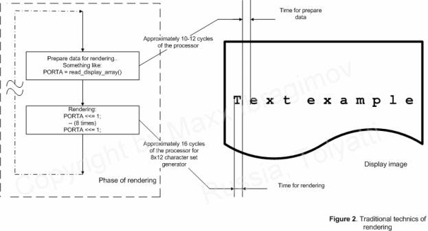
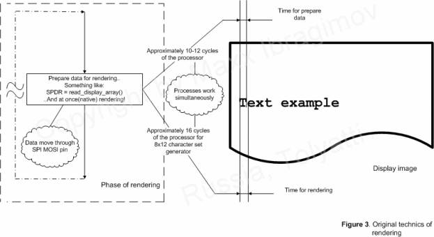

Atmel ATmega Microcontroller VGA/PAL adapter

 Interested in easy to use VGA solution for embedded applications? Click here!
Interested in easy to use VGA solution for embedded applications? Click here!
>> The prototype of VGA video adapter
|
 >> This is what it looks like on a VGA monitor... |
 >> ... and output on a TV set.
|
Background of the project.
Several months ago I tried to connect a microcontroller system to a VGA monitor to output data in the form of text. I was surprised to find little on this subject on the internet, to assist me in achieving this goal. Certainly nothing simple a beginner could find useful.
There are examples out there that utilise standards such as PC-104 or complex FGPA implementations found at www.opencores.org. Other solutions include graphic controllers from Fujitsu or even one local Russian person who was offering for sale a project for $5000 on ACEX. These are fine but are little help to most hobbyists etc out there who wish to display text on a VGA or similar screen.
What I desired was a “quick and dirty” solution that did not cost too much.
Initial calculations showed that the the AVR 8-bit microcontroller from ATMEL, with its 16Mhz clock speed providing approximately 16 MIPS was a good candidate for further research. Also note that newer AVRs such as the Mega48, Mega88 and Mega168 will officially support clock rates upto 20 Mhz. Therefore I concluded that with a clock of 16 Mhz I could achieve something in the order of 8 Mhz speed of data being transferred out of a port. I also chose the AVR as I had already built up quite a body of experience with it and so I began work of the project.
After approximately two to three months of research, I present you the fruits of my labour!
The goal of the project:
The problem which I have set myself is simple enough to enumerate. With commonly available microcontrollers like the Mega8, Mega16 and similar, and with a minimum of external components I wanted a design that would be capable of displaying at least 15x15 characters on a VGA monitor using standard VGA frequencies. The data itself is to be received by the microcontroller via its USART port. All using a 16 Mhz clock for the AVR.
The given problem at present is solved successfully.
Moreover - the project is a little bit expanded and added by introduction of formation usual
Video monochrome (PAL/SECAM) a signal. I.e. depending on position of a jumper type of formed video of signal VGA or Composite Video.
The initial goal has been achieved. The project has expanded to include Monochomatic Video singal (PAL/SECAM). In my test set up a mere jumper determines whether the output is VGA or Composite Video.
|
 >> The schematic of VGA video adapter |
Characteristics of the project:
VGA-terminal:
Quantity of symbols: 20 lines by 20 characters.
The resolution of a character matrix: 8x12 points
Supported code page: WIN 1251
Formed signal: VGA
The resolution: 640x480
Frequency of vertical synchronization: 60Hz
Speed of exchange UART 19200 bps
Video terminal:
Quantity of symbols: 20 lines by 38 characters.
The resolution of an individual character matrix: 8x12 points
Supported code page: WIN 1251
Formed signal: Composite Video (PAL/SECAM)
Resolution: 625 lines (interlaced)
Frequency of vertical synchronization: 50Hz
Speed of exchange UART 19200 bps
Type of the used microcontroller: Mega8, Mega16, Mega32, Mega8535, etc.
Clock frequency of the microcontroller standard - 16Mhz.
Notes:
1. To avoid distortion of the image, when receiving data through the UART, for VGA, it is recommended to make the data exchange with the terminal in approximately 300-600 us after a signal of vertical synchronization (VSYNC).
2. The available internal RAM of the Mega8535 (only 512 bytes) is not enough for the formation of a Video signal with a resolution of 38x20 symbols.
The program's algorithm:

Explanations on work of the program:
The algorithm of rendering the image is traditional enough, the main know-how of the project is the bit-by-bit shifting of the image, utilising the SPI shift register SPDR via the MOSI pin. Thus two jobs are performed at the same time, when the subsequent byte for rendering is sent, the previous byte is shifted out through the shift register (SPI SPDR MOSI). The differences between figures 2 & 3 demonstrate this.


Conclusion:
Given the project was written with WinAVR (GCC), it is relatively easy to increase the resolution and/or frequencies used in creating the display images. With the forthcoming availability of AVR microcontrollers such as the Mega48, Mega88 and Mega168 officially supporting clock speeds of 20Mhz it is possible to achieve resolutions of 20 lines by 25-30 characters. This is possible using exactly the same circuitry.
If need be, the code can be ported to other families of modern RISC microcontrollers with only minimal changes to the code. The main limitations are the need for at least 16 MIPS and a throughput via the SPI of not less than 8 megabits per second.
Applications of the adapter:
Applications of the project are not limited to only one terminal variant (look demo in a folder examples) - despite on serious congestion of the processor regeneration of the display
the remained capacity has enough for the organization of processing for example several digital and analog signals and reaction to them, and also delivery of results of their measurements on the display in real-time (Security systems, Industrial automatics etc.). The author has the improved variants of similar systems with the resolution of the symbolical display 40x24 symbols in mode VGA, working in commercial products.
You can freely use materials of this project for educational and noncommercial purposes. All rights of this project are reserved by the author. Any reprinting, publication, including on the Internet, or use in commercial projects or similar, of materials in this project is expressly prohibited and only available with the express written consent of the author.
Files:
Sources of the project, examples
Useful references:
Cornell University Electrical Engineering 476 - Generation of video signal on AVR
The further development of the project watch on http://www.vga-avr.narod.ru/
Contact with author at the e-mail : simple-vga@rambler.ru
Author Ibragimov Maxim Rafikovich Russia, Tolyatti 10/20/2005